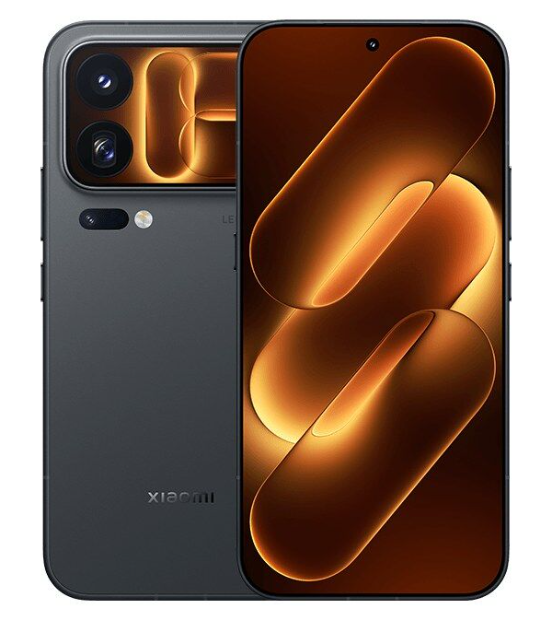
THE TECH EDIT
기술의 변화, 매일 한눈에.
카메라 · 스마트폰 · AI, 해외 테크 소식을 모아 전합니다.
최근 발행2026-09-26
새로 들어온 소식
LATEST STORIES최신 뉴스
전체 3,292개 기사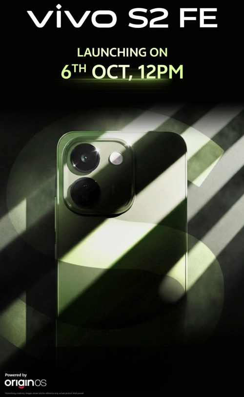
비보 S2 FE 출시일 드디어 공개, 인도에 비보 최초 10,000mAh 배터리 스마트폰 출시 예정
SK 하이닉스, Samsung 전남-광주 반도체 프로젝트 계획 확정, 반도체 생산 확대 가속화

레이저, 4K 60FPS 녹화 지원하는 키요 V2 프로 웹캠 출시
카메라 없는 안경을 출시한 것이 변태라는 비난을 받아서인가? 저커버그 "수년간 개발 준비해왔다"고 답변
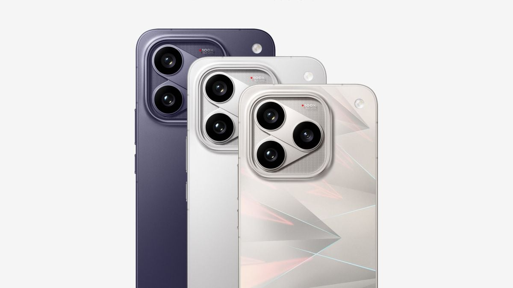
iQOO 16 카메라 세부 정보, 9월 29일 출시 앞두고 공식 확인
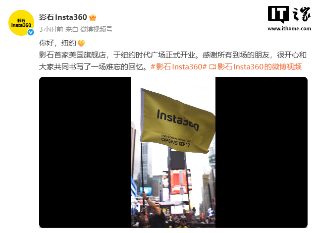
뉴욕 타임스퀘어에 입점한 최초의 중국 영상 브랜드, Insta360 미국 첫 플래그십 스토어 오픈
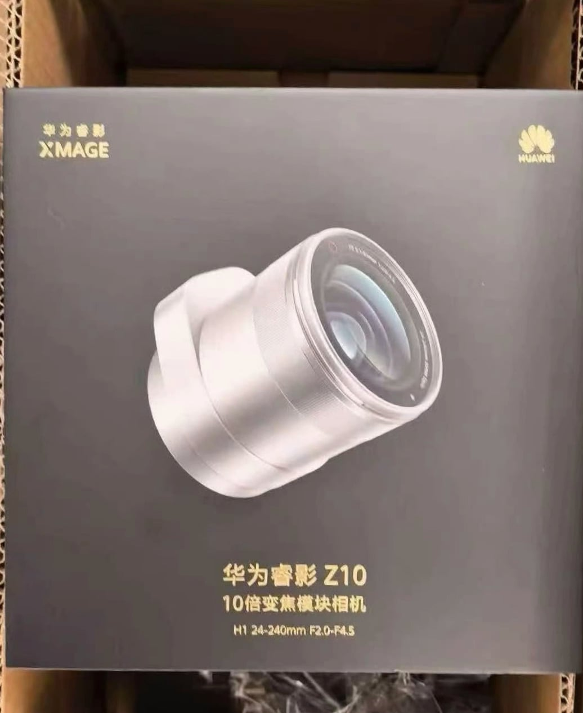
화웨이 Mate 90 Pro Max 컬렉터스 에디션 망원 확장 렌즈, 1인치 센서 및 10배 광학 줌 탑재 유출
HMD Vibe2 Pro 스마트폰 공식 발표: MediaTek Dimensity 6400 칩, 6,400만 화소 메인 카메라
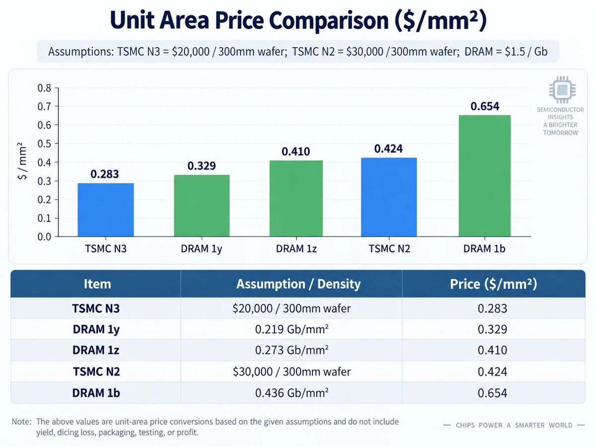
글로벌 메모리 부족: 1b DRAM 웨이퍼, TSMC N2 대비 제곱 밀리미터당 54% 높은 비용
독일 베를린 경찰, AI 감시 카메라로 범죄 단속…폭력 및 파괴 행위 자동 식별
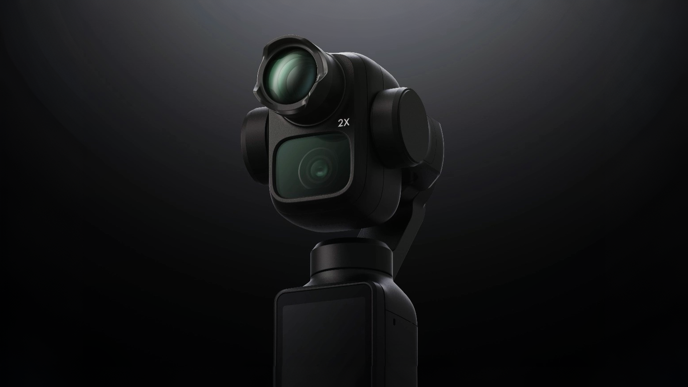
DJI 오즈모 포켓 4P, 광학 줌 확대를 위한 텔레컨버터 탑재 가능성 제기 (유출 이미지)
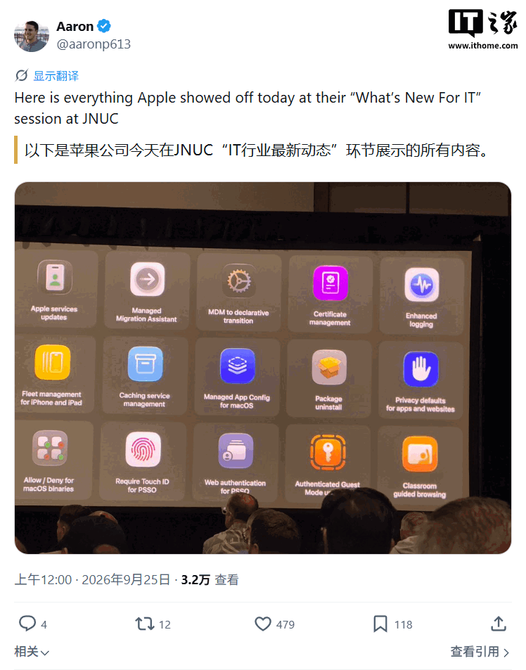
Apple, 모든 제품 라인업의 온디바이스 AI 기능 공개: iPhone 18 Pro 등 최대 140억 매개변수 활성화 모델 실행
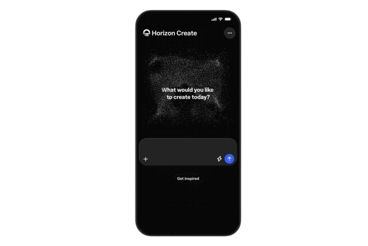
Meta, 스마트폰에서 게임을 직접 구축할 수 있는 AI 도구 2종 출시
쉬페이, Xiaomi 18 Pro 시리즈 스마트폰 글로벌 출시 확정
비보 이매진 스마트폰 사진 어워드, 새로운 단편 영화 부문과 함께 4회째 개최
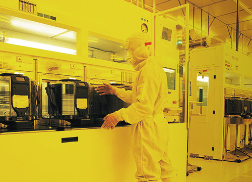
TSMC, 2027년 1월 웨이퍼 출하 가격 3~6% 추가 인상 계획 발표
Apple 전 CEO 팀 쿡, 미국 반도체 업계 최고 영예 수상… AMD 리사 수, 그의 업적 극찬
해외 금융 대기업 Revolut, 영국 최초 오프라인 안면 인식 결제 서비스 출시: 카메라 보고 웃으면 결제 완료

Qualcomm, 초저해상도 감지 카메라 공개: 얼굴은 감지하지만 신원 식별은 불가

2026 스냅드래곤 서밋 퀄컴 고위 관계자 인터뷰: 듀얼 플래그십 전략, 업계 최초 5GHz 초과, Xiaomi와의 협력 관계, AI 스마트폰의 미래...
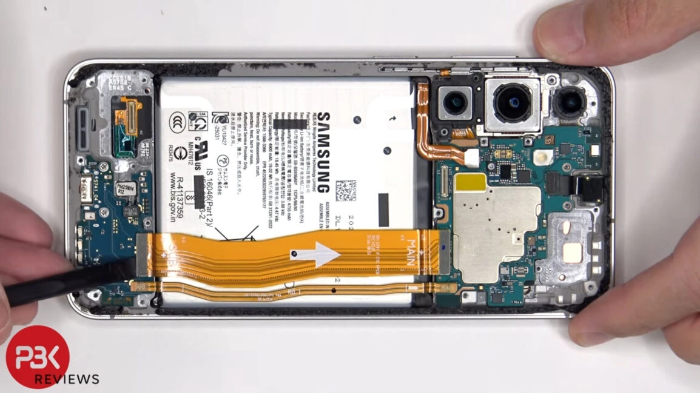
PBKreviews, Samsung Galaxy S26 FE 스마트폰 분해: 렌즈 커버와 배터리 유지보수 용이성 향상
검색 결과가 없습니다
다른 검색어를 입력하거나 필터를 초기화해 보세요.